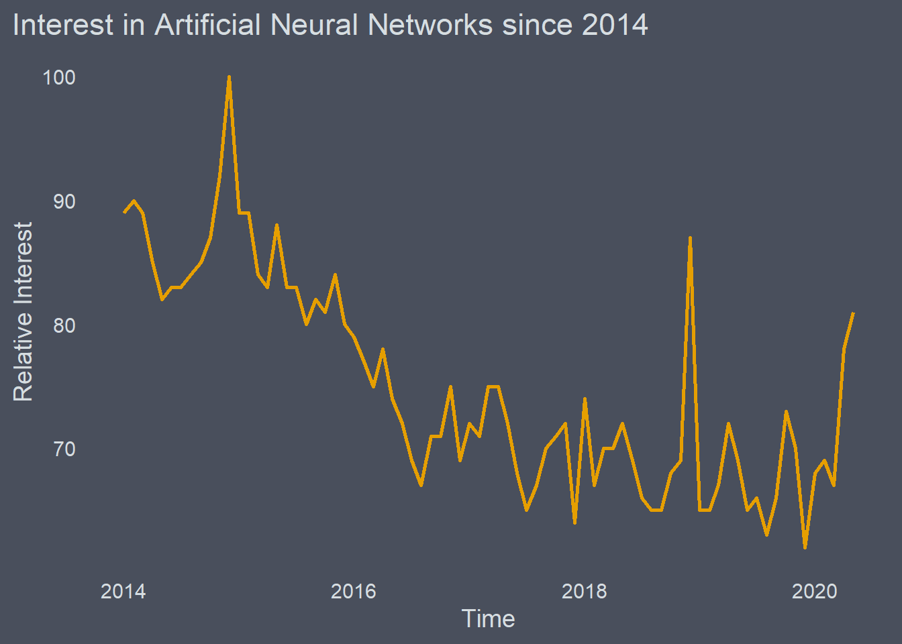

Google Trends
The query requires a few different arguments which we can define before hand.
The + between the terms in the keyword vector ensures that those words appear in that order.
#define the keywords
keywords <- c('Artificial+neural+network')
# Choose Location --------------------------------------------------------
country=c('GB')
# Define Time Fram -------------------------------------------------
time_frame = ("2014-01-01 2020-05-30")
#set channels
channel='web'Here we have the final query, which will return us a list of dataframes
trends <- gtrends(keywords, gprop = channel, geo = 'GB', time = time_frame )
str(trends)## List of 7
## $ interest_over_time :'data.frame': 77 obs. of 7 variables:
## ..$ date : POSIXct[1:77], format: "2014-01-01" "2014-02-01" ...
## ..$ hits : int [1:77] 89 90 89 85 82 83 83 84 85 87 ...
## ..$ keyword : chr [1:77] "Artificial+neural+network" "Artificial+neural+network" "Artificial+neural+network" "Artificial+neural+network" ...
## ..$ geo : chr [1:77] "GB" "GB" "GB" "GB" ...
## ..$ time : chr [1:77] "2014-01-01 2020-05-30" "2014-01-01 2020-05-30" "2014-01-01 2020-05-30" "2014-01-01 2020-05-30" ...
## ..$ gprop : chr [1:77] "web" "web" "web" "web" ...
## ..$ category: int [1:77] 0 0 0 0 0 0 0 0 0 0 ...
## $ interest_by_country: NULL
## $ interest_by_region :'data.frame': 4 obs. of 5 variables:
## ..$ location: chr [1:4] "England" "Scotland" "Wales" "Northern Ireland"
## ..$ hits : int [1:4] 100 95 90 79
## ..$ keyword : Factor w/ 1 level "Artificial + neural + network": 1 1 1 1
## ..$ geo : chr [1:4] "GB" "GB" "GB" "GB"
## ..$ gprop : chr [1:4] "web" "web" "web" "web"
## $ interest_by_dma : NULL
## $ interest_by_city :'data.frame': 94 obs. of 5 variables:
## ..$ location: chr [1:94] "Milton Keynes" "Cambridge" "Reading" "Kennington" ...
## ..$ hits : int [1:94] NA 100 89 NA NA NA NA NA 84 NA ...
## ..$ keyword : Factor w/ 1 level "Artificial + neural + network": 1 1 1 1 1 1 1 1 1 1 ...
## ..$ geo : chr [1:94] "GB" "GB" "GB" "GB" ...
## ..$ gprop : chr [1:94] "web" "web" "web" "web" ...
## $ related_topics :'data.frame': 44 obs. of 6 variables:
## ..$ subject : chr [1:44] "100" "21" "20" "12" ...
## ..$ related_topics: chr [1:44] "top" "top" "top" "top" ...
## ..$ value : chr [1:44] "Computer network" "Network Rail" "Rail transport" "Artificial turf" ...
## ..$ geo : chr [1:44] "GB" "GB" "GB" "GB" ...
## ..$ keyword : chr [1:44] "Artificial+neural+network" "Artificial+neural+network" "Artificial+neural+network" "Artificial+neural+network" ...
## ..$ category : int [1:44] 0 0 0 0 0 0 0 0 0 0 ...
## ..- attr(*, "reshapeLong")=List of 4
## .. ..$ varying:List of 1
## .. .. ..$ value: chr "top"
## .. .. ..- attr(*, "v.names")= chr "value"
## .. .. ..- attr(*, "times")= chr "top"
## .. ..$ v.names: chr "value"
## .. ..$ idvar : chr "id"
## .. ..$ timevar: chr "related_topics"
## $ related_queries :'data.frame': 50 obs. of 6 variables:
## ..$ subject : chr [1:50] "100" "50" "32" "31" ...
## ..$ related_queries: chr [1:50] "top" "top" "top" "top" ...
## ..$ value : chr [1:50] "rail network" "artificial grass" "cartoon network" "wwe network" ...
## ..$ geo : chr [1:50] "GB" "GB" "GB" "GB" ...
## ..$ keyword : chr [1:50] "Artificial+neural+network" "Artificial+neural+network" "Artificial+neural+network" "Artificial+neural+network" ...
## ..$ category : int [1:50] 0 0 0 0 0 0 0 0 0 0 ...
## ..- attr(*, "reshapeLong")=List of 4
## .. ..$ varying:List of 1
## .. .. ..$ value: chr "top"
## .. .. ..- attr(*, "v.names")= chr "value"
## .. .. ..- attr(*, "times")= chr "top"
## .. ..$ v.names: chr "value"
## .. ..$ idvar : chr "id"
## .. ..$ timevar: chr "related_queries"
## - attr(*, "class")= chr [1:2] "gtrends" "list"We can access the elements of the list we would like and assign them to a variable. I have creatively named them as seen below.
The city data seems quite suspect to me and is undoubtedly a case of search locations being grouped to the nearest ‘city’
time_trend <- trends$interest_over_time
city <- trends$interest_by_cityProcess and plot
# A little bit of cleaning ------------------------------------------------
library(forcats)
city <- na.omit(city)
# Lets take a look --------------------------------------------------------
ggplot(city, aes( reorder(location, hits), hits)) +
geom_col(fill ="#E69F00", show.legend = FALSE) +
coord_flip() +
labs(title = 'Search Results By Approx Location',
y = 'Relative Interest',
x ='Approx Locations',
caption = Sys.Date()) +
theme_hermit()
# CAUTION: This step is only undertaken to ensure better plotting --------
time_trend$hits[time_trend$hits == '<1'] <- 0
time_trend$hits <- as.numeric(time_trend$hits)
glimpse(time_trend)## Rows: 77
## Columns: 7
## $ date <dttm> 2014-01-01, 2014-02-01, 2014-03-01, 2014-04-01, 2014-05-0...
## $ hits <dbl> 89, 90, 89, 85, 82, 83, 83, 84, 85, 87, 92, 100, 89, 89, 8...
## $ keyword <chr> "Artificial+neural+network", "Artificial+neural+network", ...
## $ geo <chr> "GB", "GB", "GB", "GB", "GB", "GB", "GB", "GB", "GB", "GB"...
## $ time <chr> "2014-01-01 2020-05-30", "2014-01-01 2020-05-30", "2014-01...
## $ gprop <chr> "web", "web", "web", "web", "web", "web", "web", "web", "w...
## $ category <int> 0, 0, 0, 0, 0, 0, 0, 0, 0, 0, 0, 0, 0, 0, 0, 0, 0, 0, 0, 0...ggplot(time_trend, aes(x=date, y=hits,group=keyword,col=keyword))+
geom_line(size=1,col ="#E69F00")+
xlab('Time')+
ylab('Relative Interest')+
theme_hermit()+
theme(legend.title = element_blank(),legend.position="right",legend.text=element_text(size=12))+
ggtitle('Interest in Artificial Neural Networks since 2014') +
scale_color_viridis_d()